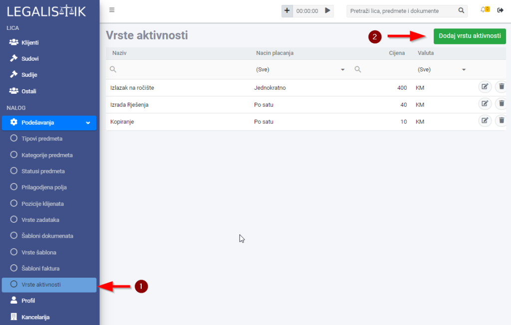
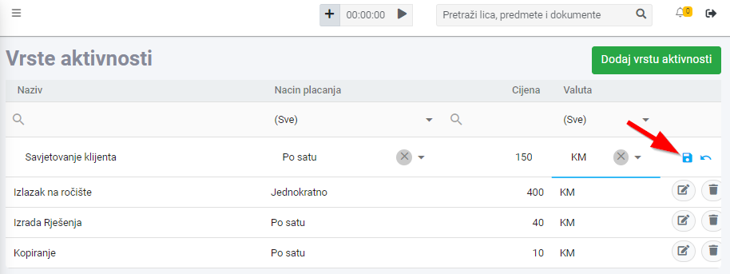

Da bi dodali novu vrstu aktivnosti, otvorite Vrste aktivnosti unutar Podešavanja u meniju na lijevoj strani i kliknite na dugme Dodaj vrstu aktivnosti:

U listi vrsta aktivnosti dodaće se novi red gdje treba da upišete naziv, način plaćanja (po satu ili jednokratno), cijenu i valutu. Klikom na ikonicu diskete na desnoj strani reda, snimate novi unos:
